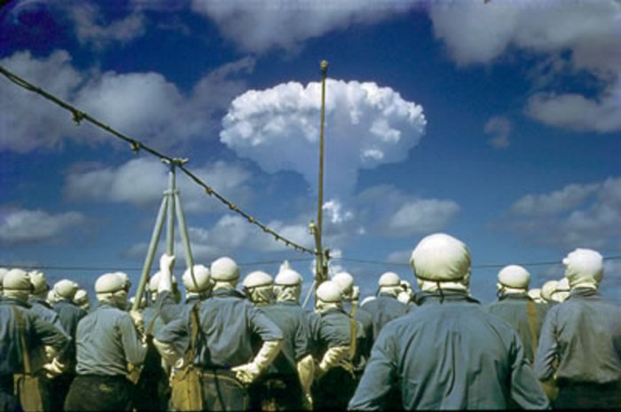
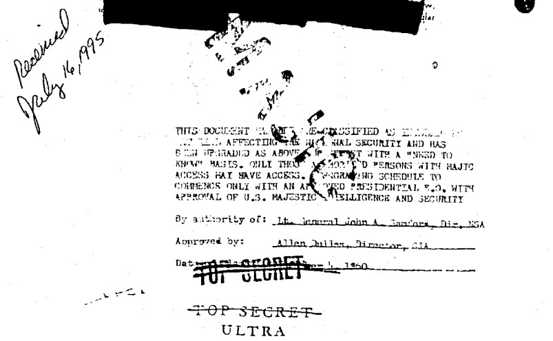
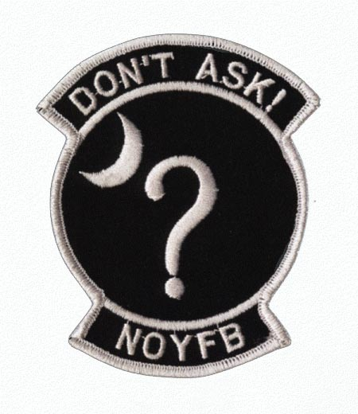
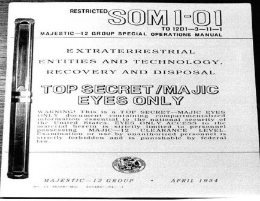

This is the second part of a series discussing how secrets are kept in the United States, and what MAJestic was all about in regards to that aspect of it. Note that since, MAJestic has been disbanded. It has evolved into other programs with other and different focus. I know nothing about what it is today, nor do I want to know.
Because MAJestic has been disbanded, information presented herein is thus out of date, obsolete, and is only of interest to students of history.
Two Part Post
This post comes in two separate articles, due to the relative size of it.
The MJ-12 Public Disclosure
This is a quick “executive summary” of the history behind the public disclosure of the MAJestic umbrella program.
This program is secret, it has always been secret, and it will always remain secret. No matter what the Internet might make one believe, there will NEVER be any kind of “official” announcement or disclosure of the existence of this program. Sorry, to break the reader’s heart. It just is not going to happen.
The organization has become too large; too involved in various unconstitutional activities, too entangled with extraterrestrial agreements, and far too complicated to unravel. It will never be officially recognized by anyone in the government. There will NEVER be an official pronouncement regarding the existence of this program.
Does the reader actually believe that the government would risk military superiority by announcing that they have reverse engineered space vehicles? Does the reader actually think that the MAJestic leadership would admit that the “sex offender registry” was designed to retire former MAJestic operatives? Does the reader actually believe that the United States government will admit that they have approved that extraterrestrials could abduct Americans? Not only abduct them but medically probe Americans ? Of course not. It will NEVER happen.
"I talked to President Obama about extraterrestrials. He said he could neither confirm nor deny the existence of aliens, which means they're real." - Jaden Smith Jaden Smith is the son of the famous actor Will Smith. In May the 14-year-old joined his father, mom Jada Pinkett-Smith and sister Willow on a trip to the White House, which included a visit to the Situation Room with President Barack Obama. During the visit he took advantage of the opportunity to ask the President about aliens. For the record, there is no FUCKING WAY that anyone like former President Obama knew anything about MAJestic except in a very, very trivial form. That goes for Hillary Clinton, Bill Clinton, and the rest of the service-for-self political cabal living the “high life” at the expense of the many. NO WAY. I tell the reader this two times. Please believe me.
Its existence has been kept secret from the late 1940’s when it was first authorized by President Harry Truman.
Congress and the Senate have absolutely no knowledge of this program; nor do they have any REAL oversight ability or budgetary control. At best some key Senators and Congressmen might be given limited briefings on this program from time to time at the discretion of the MJ-12 membership body. This would be for purposes central to keeping the black projects secret. (There are very good reasons for this.)
This program would still be secret, and we members would still not have a name to refer to the top leadership in the organization if it wasn’t for a public disclosure of the program in 1984.
Public knowledge of MAJestic is through a public disclosure known as the “MJ Documents”.
Apparently, in December, 1984, Jaime Shandera, a Hollywood movie producer and UFO researcher, received an unusual package through the post. Inside was just one roll of undeveloped 35mm black and white film. There were no accompanying letter or return address, the only clue to where the package came from was by the postmark which was Albuquerque, New Mexico. Once developed, the film contained negatives of what appeared to be an eight page briefing paper, prepared on 18th November, 1952, for president-elect Dwight D. Eisenhower.
When a new President is elected, the existent staff prepares briefing papers and documents to explain to the new president what is going on in various areas of their charge. This was a very old briefing paper that was prepared by the staff of the Truman administration and presented to the new incoming president Mr. Eisenhower.
- A warning on the first page read, ‘This is a TOP SECRET – EYES ONLY document containing compartmentalized information essential to the national security of the United States’.
- On page two was a list of 12 influential US scientists, military leaders and intelligence advisors.
- It was not until viewing page three that the subject of the papers became clear, “the recovery of a crashed flying saucer and alien bodies near Roswell, New Mexico, in July 1947”.
- The final page of the briefing paper was a memorandum, dated 24th September,1947, from President Harry Truman to his secretary of Defense, James Forrestal. In it, Truman instructs Forrestal to proceed with ‘Operation MAJestic-12’, but gives no hint at what that might be.
Alone, the Forrestal memo was meaningless. But when read next to the 1952 briefing paper, the story behind them became clear: in July 1947, a “flying disc-shaped aircraft” crashed landed in Roswell, New Mexico, and “extra-terrestrial biological entities” (EBEs) are recovered by the military. When President Truman is informed about the crash, he authorized Defense Secretary Forrestal to set up a committee to investigate and deal with the situation.
From the documents is a clear reference to MAJestic.
OPERATION MAJESTIC-12 is a TOP SECRET Research and Development / Intelligence operation responsible directly and only to the President of the United States. Operations of the project are carried out under control of the MAJestic-12 (Majic-12) Group which was established by special classified executive order of President Truman on 24 September, 1947, upon recommendation by Dr. Vannevar Bush and Secretary James Forrestal. (See Attachment "A".) Members of the MAJestic-12 Group were designated as follows: Adm. Roscoe H. Hillenkoetter Dr. Vannevar Bush Secy. James V. Forrestal Gen. Nathan F. Twining Gen. Hoyt S. Vandenberg Dr. Detlev Bronk Dr. Jerome Hunsaker Mr. Sidney W. Souers Mr. Gordon Gray Dr. Donald Menzel Gen. Robert M. Montague Dr. Lloyd V. Berkner The death of Secretary Forrestal on 22 May, 1949, created a vacancy which remained unfilled until 01 August, 1950, upon which date Gen. Walter B. Smith was designated as permanent replacement.
Background on the Program
There are all kinds of nonsense about this program on the Internet. However the key facts regarding it can be used to discern truth from fiction. Here is my take.
While the program was set up to address the “extraterrestrial issue” as equals, it eventually evolved over the years into a support organization for our extraterrestrial benefactors. As such, MAJestic was used to support the monitoring of this sentience nursery called Earth.
- Members must have a “service to others” sentience.
- Members are not political (except for Ronald Reagan who was involved at a time of military concern and thus HAD to me made aware of the organization).
- Members all must have a technical background.
Any quote on the Internet that [1] lists political figures, [2] people of great fame or popularity, and [3] any individuals lacking in any of the technical sciences is to be considered to be nonsense, or disinformation at worst. For example…
“MJ-12 does exist and now has 36 members. He was reluctant to divulge names although confirmed that former American Secretary of State, Henry Kissinger and father of the hydrogen bomb, Edward Teller, are present members. MJ12 regularly meet at various secret locations including the Batelle Memorial Institute at Columbus, Ohio.” -Dr. Wolf (Paraphrased statement, personally approved by him.)
From released documentation, it is pretty obvious that operation MAJestic-12 was established by special classified presidential order on September 24, 1947 at the recommendation of Secretary of Defense James Forrestal and Dr. Vannevar Bush, Chairman of the Joint Research and Development Board.
The goals of the group was to [1] exploit everything they could from recovered alien technology; [2] to reverse engineer what they could recover, and [3] keep foreign powers from the awareness that this was being done.
This is one of the reasons why I absolutely believe that it is impossible for the program be internationalized. There are compartmentalization upon compartmentalization. It is far too valuable a program to share with other groups or nations which might have members that might not integrate properly into the overall MAJestic mindset.
From day one this was an American program.
Subsequent treaties with extraterrestrials, reinforced this. The local (extraterrestrial) federation wanted to deal with only one human organization rather than a myriad of nations. The United States, then the strongest and most powerful and influential, was the logical choice for the Human-extraterrestrial relationship.
Ever since the start of the program, at the very beginning, ambitious, elite scientists such as Vannevar Bush, Albert Einstein, and Robert Oppenheimer, and career military people such as Hoyt Vandenberg, Roscoe Hillenkoetter, Leslie Groves, and George Marshall, were called upon to understand the alien agenda, technology, and their implications.
Of course.
However, at that time, our understanding of the universe was very primitive. Our eyes were on the earth, and our concerns were with other people in other lands. We had no concept of space travel, extraterrestrials or anything even remotely similar to what we were encountering.
Einstein and Oppenheimer were called in to give their opinion, drafting a six-page paper titled “Relationships with Inhabitants of Celestial Bodies”.
They provided prophetic insight into our modern nuclear strategies and satellites. They also expressed an agitated urgency that an agreement be reached with the President so that scientists could proceed to study the alien technology.
Unlike most projects and programs, this one was “pulled together” under a sense of urgency with little previous study.
The extraordinary recovery of fallen airborne objects in the state of New Mexico, July 4 – July 6, 1947, caused the Chief of Staff of the Army Air Force to conduct a most serious investigation.
It was at this time where the scientists of the Advanced Research branches of the military through Operation Paperclip began to corporate and coordinate their surreptitious radar experiments with the Army Air Force. (Read elsewhere for my post on how the radar sites were used intentionally to uncloak and disable extraterrestrial vehicles.) But at this early date coordination was hampered by confusion, interdepartmental rivalries and confused chain of command. It wasn’t until months later that a formalized command structure was implemented and systems put in place to acquire, recover and analysis these mysterious extraterrestrial objects.
It took a while for the MJ-12, or MAJestic organization to get control of the situation. It took years, not months, to fully coordinate various operational ground teams, train them, and put proper specialized systems in place. But, eventually, for most practical purposes, the MAJestic umbrella was unfolded and the decade of the 1950’s witnessed an unprecedented series of de-cloaked and crashed extraterrestrial vehicles.
The phrase “the MAJestic umbrella was unfolded” means that the MAJestic program was implemented and eventually it became a stable and fully functional stand-alone organization.
They were everywhere, and it took some time for those at the forefront of the program to really understand what was truly transpiring in the United States and around the world.
The MAJestic program expanded over the decades.
Thus greatly fueled the UFO fad at the time with the enormous number of UFO and monster movies that were popular at that period in time. News media, and pulp magazines were filled with stories (mostly fictional) regarding contacts, observations and experiences regarding these events.
The 1950’s
We were a nuclear power with egos to match.
In the 1950’s, Americans thought that they were the biggest and the best on the planet. We had defeated a group of Progressive Socialists; the German Nazi’s, and laid waste to most of the planet. Economically the United States was at the top of the global tier, and we had sole control of nuclear weapons. We thought and believed that we were the best. It was our destiny.
What began by MJ-12 as a small simple research program in the late 1940’s expanded and ballooned into one of the largest scientific programs in the history of the world. Within the MAJestic umbrella are many such smaller programs all focused in the re-engineering of advanced technologies; advanced propulsive methods, extraterrestrial life, and the general advancement of science. The decade of the 1950’s came as a harsh slap on the face to Earth-centric politicians, and resulted in the first of numerous treaties with a small number of key extraterrestrial races.
MAJestic was known, at that time, as a “Top Secret” organization.
The core individuals at that time were (aside form the President) soldiers of military rank, or scientists. At that time, and in decades since, all upper level management in both the military and scientific circles have needed to wear a political mantle of respect in order to further their own personal agendas. This should be rather clear to the reader. The most successful scientists in the United States are those whom align themselves with the political winds that blow in Washington, D.C. . A good description of this process and what happens when a politically connected scientist and a non-politically connected scientist battles over funding can be observed in the movie titled “Contact”.
The 1960’s

The 1960’s saw an embryonic human scientific base tying to expand its awareness and capabilities to match that of the various extraterrestrial races that we encountered. However, over time, it became painfully obvious that their science was not only different from ours; it was thousands of years more advanced.
They had abilities that was even beyond our comprehension.
A serious reappraisal of humans and their relationship with extraterrestrials began to coalesce. With that came the need to face the very harsh realities of our human existence.
This harsh reality was quite a shock to those in positions of power in the United States. For they, actually believed that they were superior to their fellow human beings. (As they still do.) They believed that they were “special”. They had, somehow, convinced themselves that through popularity, fame, wealth, power or education, that they had “bested” their fellow humans and have become “king of the hill”, or “masters of the human condition”. Their egos at the time reflected this reality.
The shock wave that reverberated through the closed meeting rooms were clear in that the human race is not only [1] monitored by advanced extraterrestrial races, but that it is [2] cultivated by them. We were [3] created by them. As such, they know exactly how to control us. They know how our brains function and why. They can cause our brains to shut down at will and cause a migration of our awareness or consciousness into other containers.
- The Earth is monitored by an extraterrestrial organization.
- The Earth is a carefully equipped nursery for the evolution of humans.
- Humans are cultivated so that our sentience can be established.
- Humans have been bred or created to what we are currently.
This knowledge forced increased secrecy regarding the programs.
MAJestic became even more secretive, and membership was severely limited and controlled. Many early members were culled or put into areas or situations where disclosure was difficult if not impossible.
The following is reprinted. It is an excellent article by William B. Stoecker and can be found reprinted here: http://www.unexplained-mysteries.com/column.php?id=266635 Reprinted just in case the Internet link, page or archives disappear. The reader is free to disregard the content if they desire. “On 5/22/49 a man jumped, fell, or was thrown or pushed from a small window on the sixteenth floor of Bethesda Naval Hospital in Washington, D.C. A cord from a bathrobe was tied around his neck as if he had planned to hang himself, but, strangely, if it had been tied to anything in the room it had come loose. The only thing to which it could have been attached was a radiator. Scuff marks were on the window sill, indicating possibly a struggle with one or more assailants, or, if it was suicide, a last moment change of heart and a failed attempt to save himself. The hospital, without bothering to investigate, immediately classed the death as suicide, and the County Coroner agreed without question and signed the death certificate. Bethesda Naval Hospital, you may recall, did the autopsy on JFK in 1963, an autopsy that has been questioned by many researchers, and which “proved” that JFK was shot from behind. (Later shown to be a government lie during the full disclosure of the remaining JFK papers. Found here; https://www.activistpost.com/2017/10/jfks-assassination-not-conspiracy-theory-sophisticated-plot.html ) The man who fell to his death was James Vincent Forrestal, America’s very first Secretary of Defense. He was born 2/15/1892, attended Princeton University but did not graduate, and trained as a naval aviator during WWI, but was never sent into combat. He worked as a bond salesman, and, early in WWII, was appointed Secretary of the Navy. Rather than remaining safe and comfortable in D.C., Forrestal toured the Pacific and witnessed several major battles, including Iwo Jima, where he left the relative safety of a ship and went ashore. He favored a negotiated settlement with Japan, which could have ended the war in early 1945 or even sooner, saving hundreds of thousands of lives and not involving the Soviets, who invaded Manchuria and Korea late in 1945, arming the Chinese communists and setting up a communist dictatorship in North Korea. Had Forrestal had his way, there would have been no Korean or Vietnam wars and America today would probably not be menaced by a hostile China. Forrestal was unable to convince Truman, who held out for unconditional surrender, although Forrestal finally convinced him to offer to let the Emperor remain (as a figurehead), which led Japan to accept the terms of the Potsdam Declaration and surrender. After the war, Forrestal became an outspoken anti-communist, and was a close friend of communist hunter Senator Joe McCarthy (the Venona intercepts have proven that McCarthy had been right all along about the “reds under the bed”). Over time, Truman apparently began to lose confidence in him, for, while he resisted some of the service chiefs’ demands for ever-more military spending, he opposed Truman’s near complete disarmament of the U.S. This proved to be an intolerable strain for Forrestal, who began to show very real signs of a mental breakdown, and claimed that strange men were following him. He suggested that they might have been sent by Secretary of the Air Force Stuart Symington, with whom he had quarreled, or that Attorney General Tom Clark had ordered the FBI to follow him. Remember that, for all we know, people really were following him…as the saying goes, “just because you’re paranoid doesn’t mean they’re not out to get you.” Tom Clark, a liberal Democrat and father of radical leftist Ramsey Clark, had been involved in the initial stages of the internment of Japanese Americans, possibly the greatest U.S. civil rights crime of the twentieth century, orchestrated by “liberals.” Secret Service chief U.E. Baughman (not a psychiatrist) believed that Forrestal was psychotic, but then Baughman, as late as 1961, was still denying the existence of an organized crime syndicate in America. At the very least, this calls his judgment into question. On 3/28/1949 Forrestal resigned as Secretary of Defense, almost certainly because Truman no longer wanted him in that position. Some 3,000 pages of his personal diaries were then taken to the Truman White House; to this day we do not know why, nor do we know what those diaries contained. After the resignation ceremony he had a conversation with Stuart Symington that left him badly shaken; to this day we do not know what, exactly, was discussed. His mental condition continued to deteriorate, and finally he was taken by his alleged friends Robert Lovett and Dr. William Menninger to Bethesda Naval Hospital where, despite being allegedly suicidal, he was placed on the sixteenth floor. Normally, anyone believed to be suicidal would be placed on the first floor so they could not jump to their death. Lovett, a naval aviator in WWI, was a banker from a wealthy family and a member of the sinister Skull and Bones secret society; many of America’s elite have been Bonesmen. Lovett was also a close associate of John McCloy, who was an “insider’s insider.” Dr. Menninger, founder of the Menninger Foundation and the Menninger Clinic, was an extreme liberal, opposed to punishment of criminals, whom he believed could be “treated,” but there is nothing in his background to suggest that he might be dishonorable or involved in the New World Order conspiracy (which is more than can be said for the sinister McCloy). At the hospital, the staff refused to allow Forrestal to see his priest, Father Sheehy, despite his request to allow him to visit. For a long time they resisted his request to allow his brother to visit him, although he was permitted to see his sons. He was also visited by Dr. Menninger, by LBJ (the thoroughly corrupt “architect” of the pointless Vietnam War and the failed “Great Society”), and by Rear Admiral Sidney William Souers, who had been a banker most of his life before being given a commission in the Navy, despite a lack of military training or experience. Finally, Forrestal’s brother decided to take him out of the hospital, but, before he could do so, the “suicide” happened. Then Forrestal’s priest came to the hospital where, he claimed, an enlisted Navy medical corpsman approached him in a packed room and told him that Forrestal’s death was not a suicide, before disappearing back into the crowd. There is no conceivable reason why either the priest or the corpsman would make up such a story, and the corpsman, rather than seeking publicity, seemed anxious to preserve his career…or his life. Years later, a Bethesda corpsman involved with the JFK autopsy died under mysterious circumstances. In fact, there have been innumerable mysterious deaths in twentieth and twenty first century America…”suicides” and “accidents” and murders by “lone gunmen,” of whom there seem to be an inexhaustible supply. To name but a few, Lee Harvey Oswald was conveniently shot by Chicago mob affiliate Jack Ruby before he could be questioned at length. Karen Silkwood was run off the road and killed while carrying documents she alleged proved malfeasance at the Kerr-McGee nuclear plant; whatever the documents did or did not prove, there is little doubt that they existed…but they were missing from her car. Documents assembled by freelance investigative journalist Danny Casolaro also vanished, after his wrists were slashed multiple times…labeled a “suicide,” of course. He had been investigating what he called the “octopus,” and many of us conspiracy researchers refer to as the NWO elite or the Illuminati. White House counsel Vince Foster was shot with an unregistered handgun he was not known to have owned and there is a mass of evidence showing that his death was no suicide, despite the usual official verdict. Then there are the mysterious deaths of Treasury Secretary Ron Brown and the passengers and crew of his plane, and former White House intern Mary Mahoney and her co-workers. Recently, fairly high level bankers have been dying like flies all over the world. So yes, it is entirely possible that powerful people in the government and among the wealthy elite who seem to control it could have thrown James Forrestal to his death. That leaves us with the question of motive. As I said long ago in my book, the one thing the elites fear is one of their own, privy to many secrets, turning on them and possibly revealing those secrets. And, as shown above, Forrestal was certainly an insider surrounded by other insiders, other high-ranking members of the establishment. But what secret, if any, did he threaten to reveal? Author and researcher Richard Dolan has suggested that the elites may have feared that Forrestal would make public all he knew about UFOs, and, indeed, it is likely that he knew a great deal. Researchers who believe in the existence of Majestic Twelve, or MJ-12 allege that Admiral Souers was a member. Remember, even if the whole MJ-12 story, the claim that a secret group of “wise men” was appointed by Truman to study UFOs is partly disinformation, there is no doubt that our lords and masters know much more than they are telling about the subject. And there probably was something at least resembling MJ-12, even if it involved more or less than twelve members, and some of the alleged members were indeed the sort of people likely to be appointed to such a group. Yet, although UFO secrecy may have been part of the reason for Forrestal’s murder (and it does look suspiciously like murder), it is likely that the main reason is something else entirely. The policies of FDR and Truman made the Soviet Union a world power, and FDR’s appointees, like Robert Oppenheimer, a communist who recruited other communists who gave our nuclear secrets to Stalin, ensured a nuclear balance of terror, a Damoclean sword that still hangs over us. By refusing to negotiate with Japan, and then inviting the Soviets to enter the war in the East, Truman ensured the rise of the communists in China and Korea. By disarming the US too quickly and too completely, he left the world vulnerable to communist aggression. The FDR and Truman regimes were riddled with such Stalinists as Harry Hopkins and Alger Hiss; all of this was opposed by Forrestal, who knew far too much for his own good. There is good reason to suspect that WWI and WWII, Korea, Vietnam, and all of our more recent and seemingly endless wars, including the Cold War, were rigged from beginning to end. And the elites behind it all are still in power.”
The 1970’s
In the mid to late 1970’s MAJestic, members began to be implanted with memory control devices. These devices blocked access to selected memories.
With that came an expansion of the scope and breadth of the programs; all without public awareness or public knowledge. The technology expanded even further and fathered many sub-programs. Each sub-program under the MAJestic umbrella was isolated and specific to their mission at hand. It is for this reason that my knowledge on some subjects is so wide, while at other times, severely limited in scope.
MAJestic was (for the first time) exposed to multi-dimensional travel and realities.
This resulted in studies and negotiations towards development and utilization of fixed dimensional doors (or ports). MAJestic began to change the overall focus of the organization into one that was elite and was necessary in support of our extraterrestrial benefactors mission parameters.
By the end of the decade, all of MAJestic was involved in SAP “carve outs” of one type of the other.
The 1980’s
Ronald Reagan expanded the program greatly.
Numerous efforts in reverse engineering of technology, new technological development programs, and space-based habitats came into being. This included a small facility on the Moon, which (I think) was later abandoned.
During the 1980’s certain individuals, such as myself became involved in world-line travel. The primary goals of MAJestic at this time was to continue technological development while providing a minimum of support towards human sentience development.
MAJestic gave me, and my peers, to our extraterrestrial benefactors in exchange for help in technology development.
- The 1980’s saw increased and standardized use of fixed dimensional portals.
- It also was when the Oxia Palus facility was starting to be occupied by humans.
- MAJestic became a much more powerful organization and fully began to implement multi-dimensional activities under it’s umbrella.
- Implementation of human biological monitoring of humans was supported and assisted by MAJestic.
- Technological transfer from the various recovered and traded technology platforms began in earnest and with full support by the leadership.
In exchange for the transfer of technology, our benefactors (other extraterrestrial species) requested “ambassadors” and staff for special liaison “duties”. As such, MAJestic recruited these individuals, and I was one such person.
The 1990’s
Cautious exploration of world-lines was attempted and curtailed by our extraterrestrial benefactors (temporarily). Limited solar system exploration was permitted under specific limitations.
- MAJestic became fully devoted to assisting in the management of this nursery for human sentience development. As such, MAJestic began to work with the extraterrestrials in numerous efforts.
- MAJestic outreach changed from technological development efforts to assistance efforts towards sentience development.
Re-engineered technologies developed in the 1970’s and 1980’s were permitted to bear “fruit” and resulted in American economic expansion. This included such things as radar shielding, reduced gravity flight, improvements in LED’s, fiber optics, improved materials such as Kevlar, and advances in the micro-miniaturization of electronics.
The 2000’s
As far as I am aware, there was a curtailing of the interactions with the extraterrestrial benefactors as their concerns were mitigated by various developments in the solar system. To this end, my program was terminated, and my involvement ended. I know nothing about what was going on after 2006.
I know that certain technological development programs continued, and that there is a small contingent that was still active at the Martian Oxia Palus facility. I do not know what became of the program once I was deactivated.
I do not know what is going on with MAJestic. I finished my retirement sequence in 2011, so I really haven’t a clue as to what is going on now a days.
This is, as best I can explain, the MAJestic program in a nutshell.
The phrase “in a nutshell” is an American idiom that means to greatly simplify a subject and to distill it into its very essence. In short; to make a complex subject simple and easy to understand without getting to involved in any of the details regarding it.
Disclosed Information
Only the top-most members in this organization have any idea of the vast scope of this program, and knowledge of subprograms. This organization in compartmentalized. Even those at the top level have no idea of the details that us agents have uncovered or avenues of scientific discovery that we have explored.
The program is so secret that even us members had no clue as to what we were doing and why. Let alone an understanding of how our actions and results “fit” into a bigger picture. The truth is that at no time did I ever receive a detailed briefing of my role and the actions that I would take. Further, when Sebastian and myself were getting our “training” at China Lake NWS neither of us discussed “the program” or our roles in it.
Additionally, we had no desire to if we wanted. We did not talk about our time in Florida, nor did we discuss how we both conveniently ended up at China Lake. Heck, even when we met again, at the ADC Diagnostic facility at Pine Bluff, and we had an opportunity we rarely talked about our mission and events.
That is one of the reasons why I tend to be very leery of the Internet disclosures where some fellow claims to be involved in a “secret government program” and tells all kinds of information about it. These individuals can be seen and found on the Internet, but the reality is something different. Actual members, even at the highest levels know very little about the entire program. Those who would best be considered, as “experts” know quite a bit about very little…
Which is why I know so much about soul configuration, world-line travel, dimensional anchoring, but very little about vehicular propulsion, extraterrestrial biology, and program overviews.
Because my experienced was severely limited, I can only offer a very retarded and culled overview of the program. What I have picked up are but mere glimpses of possible disinformation that tends to abound on the Internet. In the best interests of honesty and scientific discourse, I have organized what I believe the organization is involved in, and provide nuanced selections obtained from dubious sources (the Internet or books) for further investigations were the reader so inclined.
ProWord
Apparently, numerous individuals has pointed to the term MAJESTY as the umbrella organization’s proword. Everything under MAJESTY is broken down into compartments and difficult to trace to a higher authority.
“Prowords are abbreviated, standardized ways of saying common things in communication. They facilitate communication because you don’t have to wonder what something meant, the prowords all have distinct meanings.” -BIARC.NET
I can honesty say that I have never used this term, and I most certainly fell under the umbrella of this program. I have seen more than a few cases of documentation at the base facility that utilize various terms and prowords. However, I do not recall this word ever being used.
The reader can come to their OWN conclusions regarding this;
- I was not “high enough up in the organization” where this term would be used.
- Or, perhaps the idea that this is a proword is disinformation.
- Or, that my memories of such a word usage has been blanked out of my memories.
TOP SECRET/MAJIC
MAJI stands for the MAJestic Agency for Joint Intelligence. It is the group associated with all documents labeled “TOP SECRET/MAJIC” that is responsible for all scientific study related to extraterrestrial life, and the efforts needed to contain that material. All document control for MAJestic falls under their prevue.

Majestic-12
When the program was first established a group of twelve apostles were gathered around the President to address the extraterrestrial “issue”. A selected team of twelve experts in many different fields who evaluate information, technology, biology and other facets of the alien presence in order to better understand the phenomenon. Members are given information on a need to know basis only. Biologists, for example, are not given information regarding any other subject.
This is obsolete information.
The entire organization was reorganized under President Reagan in the 1980’s. This reorganization greatly expanded the scope and mission of the organization. As far as I know, the organization maintained an “executive” level “steering committee” of whose members included and maintained the inclusion of scientists and others of functional (as opposed to political) benefit.
I do personally believe that the entire Bill Clinton presidency was “shut out” of this organization for the simple reason that our extraterrestrial benefactors would not approve any of the political-hacks and ilk that came part of that administration. I was in the organization at the time when Bill Clinton was President. I would be extremely surprised if such a pronounced service-to-self individual would be allowed any MAJIC access. It is unknown (by this author) of involvement by any of the Bush administrations. However, it is pretty obvious that if our benefactors “locked out” the Clinton administration they would certainly continue this under an Obama administration. The modern-day manifestation of the Democrat party is of service-for-self sentience. In the mind of the extraterrestrial benefactors, “Pay-to-Play” activities are selfish attributes of a service-for-self creature. Seriously, can the reader just IMAGINE what would happen if Hillary Clinton would have access to dimensional world-line travel? Since the Ronald Reagan presidency, only the simplest W(U)-SAP overviews have been presented to the elected presidents. They probably have no idea at all that extraterrestrials exist.
To prevent confusion, the reader should note that MAJESTYTWELVE is not the same as MAJESTICTWELVE. They are two separate programs and projects involving different parameters, membership and objectives.
MAJIC
This is the security classification for all things related to MAJI. MAJIC is the highest security classification in the nation.
All implanted W(U)-SAP members of MAJestic fall under the MAJI control umbrella. For instance, my program designatior began with MAJ followed by a series of alphanumeric characters. The same is true with other programs. As such, in all documents that I had the opportunity to read, the term of MAJIC was used. I never recall seeing the term MAJESTY. MAJ was always present in all the various program designations.
Possible Designation Change
Some “disclosures” refer to a renaming of the organization in the mid-1990’s. I know nothing about this. I was in the program during that time, and I was unaware of any designation changes. In any event, there are individuals who claim that the designations have changed.
“The group has been called by many names. The most recent was was used in 1992 and was identified by the name JEHOVAH. At one time it was called ZODIAC and may have changed in 1995.” -(Possible) hoax memo
Whether true or not, my cell never referred to these terms in any way or manner. In fact, the first time I heard about these designations was by reading this memo.
NRO
This is the National Recon Organization that is based in Fort Carson, Colorado. It is responsible for all space-based observation platforms, and intelligence. As such, it is responsible for all extraterrestrial observations and activities. It is also responsible for the security of all MAJestic related projects. Perhaps selected mission patches of what this organization is all about would best describe what this organization does…

Here is a quote from their website;
“The NRO is the U.S. Government agency in charge of designing, building, launching, and maintaining America’s intelligence satellites. Whether creating the latest innovations in satellite technology, contracting with the most cost-efficient industrial supplier, conducting rigorous launch schedules, or providing the highest-quality products to our customers, we never lose focus on who we are working to protect: our Nation and its citizens. From our inception in 1961 to our declassification to the public in 1992, we have worked tirelessly to provide the best reconnaissance support possible to the Intelligence Community (IC) and Department of Defense (DoD). We are unwavering in our dedication to fulfilling our vision: Supra Et Ultra: Above and Beyond.”
MAJIC Secrecy
As stated numerous times previously, members of MAJestic or the MAJIC umbrella are rigorously selected and culled from the ranks. Access to this program has to be earned and it is vetted, not only by the human aspects of the organization, but by our extraterrestrial friends as well. “Service to self” inclined individuals are not permitted. Neither are those with strong political leanings. This has always been the case. This was determined long; long before the chaos that developed internally by both Mr. Bill Clinton (D), and the outrageous political activism of Mr. Obama (D). Consider…
“…And, while it could be argued that Snowden brought into question the procedures that the government uses to vet those who receive top secret clearance, it should be glaringly obvious that they didn’t learn their lessons, instead choosing to hand a security clearance out to someone you would expect to see at an Antifa rally: Start with her name: “Reality Winner.” Then let’s tick off the other boxes: lesbian bodybuilder, ardent Bernie Sanders supporter, a “Black Lives Matter” enthusiast who (though white herself) argues that “Being white is terrorism.” A woman whose social media posts include referring to the President of the United States as a “piece of shit” and the “Tangerine in chief,” who additionally declares that in a war between the US and Iran, she’ll side with Iran. And still…STILL…she was given a top secret security clearance and access to classified materials. Which raises two very troubling questions: just what in blazing Hell does someone have to do to not get a security clearance, and how many other angry, ignorant, communist-leaning, anti-American social justice warriors are currently embedded in (and sabotaging) our intelligence agencies?!” -Duane Norman
The point being is that our extraterrestrial friends know full well what might occur if snippets of restricted MAJistic information were to be released to the public out of context.
This would be most especially dangerous if it was released in a political context. For political issues sway the herd mentality and behavioral vectors of the human population. It would send the entire direction of the nursery “off the rails”. This would not ever be permitted to occur. Therefore, only vetted agents of the “benefactors” can possess the secrets that we agents of MAJestic have.
- We are of one mind.
- We are of one sentience.
- We are the Shepard dogs, that corral the sheep.
- Even this disclosure will not expose our existence. It just acknowledges it.
Various Known / Public Projects
Everything under MAJestic is supposed to be secret, but leaks do occur. Here are various sub-projects that have made themselves known to the general public. The actual details and truthful summaries of these projects are probably wildly divergent from what is provided on the Internet.

Again, as stated previously, us “working level” agents rarely if ever referred to the program by another name. All we knew was our alphanumerical designator. Names were provided on executive summaries and briefing documentation. We would assume that these documents were prepaired for high level non-MAJestic leadership roles to facilitate black budget funding. However, that is only an assumption on my part.
Any released information to the public, no matter how “well meaning” is subject to error and disinformation. Thus, while I might want to discuss such efforts as PROJECT GRUDGE, PROJECT SIGN and the like, I am actually not qualified to do so. I know nothing of those programs and those designations. I do not recall seeing any of them at the base library, and as such, I think it would be best if I just tell the reader the truth and let the “chips fall as they may”.
Finally, the released information is (indeed, MUST be considered) to be but a very small segment of the many, many programs under the MAJestic umbrella.
Further research Avenues
The reader is welcome to investigate this subject independently. Here are some links to various sources that the reader can use instead of going through the intentional maze set up in Google.
"What we have here is the evidence. We have scores of documents, hundreds of thousands of words, hundreds of pages, of which most are top secret code word. Not just photocopies, but originals with real inks, watermarks and testable paper. The vast majority has never been seen before. We present here the detailed documentation that seems to place the stamp of reality upon the recovery of crashed extraterrestrial vehicles by the United States from 1947–1954. This validates what most people already accept: there is extraterrestrial life and we are not alone. This presentation by Dr. Robert M. and Ryan S. Wood follows chronologically a paper evidence trail left by former Presidents, military and intelligence leaders of the time." -Found on the website called “The MAJestic Documents”.
One can also visit another website called “MAJestic Documents.com”. This site takes a look at the United States program called MAJestic and the top secret government documents associated with it. It is presented in a way that tell the story of presidential and military action, authorization, and cover-up regarding UFOs and their alien occupants. It tells a detailed story of the crashed discs, alien bodies, presidential briefings, and superb secrecy surrounding it all. Special attention is paid to the forensic authentication issues of content, provenance, type, style and chronology. The story the documents tell leaves the reader with little doubt that the cover-up is real, shocking, and at times unethical.
- Classified Documents Validate US Military/Presidential UFO Involvement
- Cooper/Woods MAJESTIC Leak Grows Into Paper Flood
- Deceptive UFO Documents: Doubt, Debate and Daunting Questions
- Introduction: An Overview of the MAJestic Documents
- Overview: MAJestic 12 Documents
- MAJestic 12 Operations
- MAJIC Projects
- MJ-12 and William Cooper
- More Top Secret MAJestic UFO Documents Arrive This Summer
- Officially Released Documents Confirm The Contents Of The MAJestic 12 First Annual Report
- Origin, Identity, and Purpose of MJ-12
Here are links to the actual leaked / disclosed documents…
- The MAJestic Documents: Documents Dated Prior To 1948
- The MAJestic Documents: Documents Dated 1948–1959
- The MAJestic Documents: Documents Dated 1960–1969
- The MAJestic Documents: Documents Dated 1970-present
There are other websites as well that host a wide selection of documentation related to various governmental programs. The reader is invited to expand their research activities in these other areas as well. Archived at “The Black Vault”, you will find thousands among thousands of government documents, in their actual scanned form, ranging from a vast array of subjects.
These subjects span across many different “conspiracy” theories and other historical documentation such as the existence of UFO’s, Alien cover-ups, Nuclear and Biological Weapons, Space, World War II (the historical nature) and many more subjects that will keep you browsing for hours.
All documents contained here were obtained through the Freedom of Information Act (FOIA), and are completely 100% genuine. Some documents contained within this archive are not seen anywhere else in the world, and came to the light of day because of the FOIA request made for specifically this archive.
The reader need be cautious, as there are intentional fakes interspersed in the documentation.
“Some of the documents released by Moore were changed from the original with the deliberate intent to mislead UFO researchers. I do not know who is responsible but I believe that the Government is behind the whole thing. The rest of the documents are deliberate frauds. I am releasing the truth which I have obtained from excellent sources within the intelligence community in order to set the record straight.”
I would strongly suggest the reader visit the following site, as they have made a concerted effort to cull the documentation trail to only the most authentic documents;
Milton William Cooper
"We now recognize that habitable zones are not just around stars, they can be around giant planets, too," -Jim Green, director of planetary science at NASA, according to the LA Times 2/13/2016.
Mr. Milton William Cooper was a member of the Intelligence Briefing Team of the Commander In Chief of the Pacific Fleet as a Petty Officer in the US Navy. He was tasked to find out if the MAJestic, or MJ-12 organization actually existed.
Prior to this investigation, a number of political appointees were hearing or learning about unusual activities of some of the people who existed in their organizational structure. They wanted to know if there was any truth to these rumors or suggestions.
He conducted his investigation in 1972. This was nine years before I joined MAJestic.
The following information purports to give details of the MJ 12 papers, as well as explaining the many different code names given to Government Secret Projects. It is an interesting read. However, the reader is cautioned that it has some inaccuracies. It is also out of date as the investigation was conducted in 1972. Judicious interpretation of the information is advised.
I Milton William Cooper, 1311 S. Highland #205, Fullerton, California, 92632, (714) 680-9537, do solemnly swear that the information contained in this file is true and correct to the best of my knowledge. I swear that I saw this information in 1972 in the performance of my duties as a member of the Intelligence Briefing Team of the Commander In Chief of the Pacific Fleet as a Petty Officer in the US Navy. I swear that I underwent hypnotic regression in order to make the information as accurate as possible. I swear that I can and will take a lie detector test or any other test of any reputable persons choosing in order to confirm this information. I swear that I can and will undergo hypnotic regression conducted by any reputable and qualified Doctor of any reputable persons choosing in order to confirm this information. I will not, however submit to any test or hypnosis by anyone who is now or has ever been connected with the Government in any capacity for obvious reasons. The following is brief listing of everything that I personally saw and know from 1972 and does not contain any input from any other source whatsoever. MAJESTY was listed as the code word for the President of the United States for communications concerning this information. OPERATION MAJORITY is the name of the operation responsible for every aspect, project, and consequence of alien presence on earth. GRUDGE Contains 16 volumes of documented information collected from the beginning of the United States investigation of Unidentified Flying Objects (UFO's) and Identified Alien Crafts (IAC). The project was funded by CIA confidential funds (non-appropriated) and money from the illicit drug trade. Participation in the illegal drug trade was justified in that it would identify and eliminate the weak elements of our society. The purpose of project GRUDGE was to collect all scientific, technological, medical and intelligence information from UFO/IAC sightings and contacts with alien life forms. This orderly file of collected information has been used to advance the United States Space Program.
My comment:
Not much is taught in government schools (for the obvious reason) about the Alien and Sedition Acts – or other such clear evidence of a disconnect between what we are told and what actually is.
- For example, why should a free man have to worry about prosecution for “possessing” anything?
- In what way does the mere fact of “possession” entail a harm caused to some other person?
- How is it that a free man can be told – at gunpoint – what he may not put into his body? I refer, of course, to the lunacy that is the “war” on some (arbitrarily decided upon) “drugs.” Seriously.
- I ask the reader to think. Since WHEN did the “land of the free” become the land of “I TOLD you how to ACT”.
I do not know, but it was before my grandparents generation. Certainly there was a great push for a more “modern” social(istic) society around 1913 or so…
MJ-12 is the name of the secret control group. President Eisenhower commissioned a secret society known as THE JASON SOCIETY (JASON SCHOLARS) to sift through all the facts, evidence, technology, lies and deception and find the truth of the alien question. The society was made up of 32 of the most prominent men in the country in 1972 and the top 12 members were designated MJ-12. MJ-12 has total control of everything. They are designated by the code J-1, J-2, J-3, etc all the way through the members of the Jason Society. The director of the CIA was appointed J-1 and is the Director of MJ-12. MJ-12 is responsible only to the President. MJ-12 runs most of the worlds illegal drug trade. This was done to hide funding and thus keep the secret from the Congress and the people of the United States. It was justified in that it would identify and eliminate the weak elements of our society. The cost of funding the alien connected projects is higher than anything you can imagine. MJ-12 assassinated President Kennedy when he informed them that he was going to tell the public all the facts of the alien presence. He was killed by the Secret Service agent driving his car and it is plainly visible in the film held from public view. A secret meeting place was constructed for MJ-12 in MARYLAND and it was described as only accessible by air. It contains full living, recreational, and other facilities for MJ-12 and the JASON SOCIETY. It is code named "THE COUNTRY CLUB". Only those with TOP SECRET/MAJIC clearance are allowed to go there. MAJI is the MAJORITY AGENCY FOR JOINT INTELLIGENCE. All information, disinformation, and intelligence is gathered and evaluated by this agency. This agency is responsible for all disinformation and operates in conjunction with the CIA, NSA, and the Defense Intelligence Agency. This is a very powerful organization and all alien projects are under its control. MAJI is responsible only to MJ-12.
My Comment:
The USA is ruled by force, not law. Consider the facts; there are governmental assassinations of US citizens. A highly militarized police with near-unlimited power to harass, intimidate, and brutalize with impunity. A paramilitary group known as the TSA who are involved in groping whereby in any other setting would be considered sexual harassment. Not to mention, overseas detention, torture and assassinations carried out against anyone, including American citizens, without due process … and without recourse if later cleared.
Do not get me started, there is warrantless GPS tracking by the FBI. The uncontrolled IRS targeting of religious groups is now commonplace. Indeed, today, some people now actually be charged with pre-crimes. There are checkpoints up to two hundred miles inland from all our borders (including the two oceans and Gulf of Mexico) in an area stunningly known as a “Constitution Free Zone”. There are “No Ride / No Fly lists” which are extrajudicial, secret, and form a guilty-until-proven innocent framework that subverts freedom instead of protecting it.
Oh, Big Brother is alive and well in the United States. North Korea must be truly envious. Consider a “See Something/Say Something program” which goes beyond the already high-tech surveillance apparatus of the NSA and turns each of us into an unpaid employee of the police state similar to what the East German Stasi did to their citizens. America is a networked land of web cameras and surveillance proliferating like a wildfire. Along with it is the insidious data mining, recording all your phone conversations, all your web searches, all your emails, and all without your consent. Or, consider the “helpful” agencies, like the FDA. An FDA, which has near-total food control and usually renders anything healthy as toxic, and all that is toxic as healthy, and does insane shit like jailing folks who buy raw milk.
Literally there are tens of thousands of regulations which literally invade every facet of society, whereby it has been said that almost all of us commit three felonies per day. And every violation of these laws will be met with the full force and fury of the State which promises fines, penalties, forfeiture of properties, or imprisonment.
Does any of this even remotely resemble a representative democracy, or does it sound more like a dictatorship? Answer me. Is America a land where people can live in freedom?
Project SIGMA is the project which first established communications with the aliens and is still responsible for communications. Project PLATO is the project responsible for Diplomatic relations with the aliens. This project secured a formal treaty (illegal under the Constitution) with the aliens. The terms were that the aliens would give us technology. In return we agreed to keep their presence on earth a secret, not to interfere in any way with their actions, and to allow them to abduct humans and animals. The aliens agreed to furnish MJ-12 with a list of abductees on a periodic basis. MAJIC is the security classification and clearance of all alien connected material, projects, and information. MAJIC means MAJI controlled. Project AQUARIUS is a project which compiled the history of alien presence and their interaction with Homo Sapiens upon this planet for the last 25,000 years and culminating with the Basque people who live in the mountainous country on the border of France and Spain and the Syrians. Project GARNET is the project responsible for control of all information and documents regarding this subject and accountability of the information and documents. Project PLUTO is a project to evaluate all UFO/IAC information pertaining to space technology. Project POUNCE is the project formed to recover all downed/crashed craft and aliens. Project REDLIGHT is the project to test fly recovered alien craft. It is conducted at AREA 51 (DREAMLAND) in Nevada. It was aided when the aliens gave us craft and helped us fly them. The initial project was somewhat successful in that we flew a recovered craft but it blew up in the air and the pilots were killed. The project was suspended at that time until the aliens agreed to help us. Project SNOWBIRD was established as a cover for Project REDLIGHT. Several flying saucer type craft were built using conventional technology. They were unveiled to the press and flown in front of the press. The purpose was to explain accidental sightings or disclosure of REDLIGHT as having been the SNOWBIRD craft.
Please refer to Project 1794.
LUNA Base is the alien base on the far side of the Moon. It was seen and filmed by the Apollo Astronauts. A base, a mining operation using very large machines, and the very large alien craft described in sighting reports as MOTHERSHIPS exist there. NRO is the National Recon Organization based at Fort Carson, Colorado. It is responsible for security for all alien or alien craft connected projects. DELTA is the designation for the specific arm of the NRO which is especially trained and tasked with security of these projects. Project JOSHUA is a project to develop a low frequency pulsed sound generating weapon. It was said that this weapon would be effective against the alien craft and beam weapons. EXCALIBUR is a weapon to destroy the alien underground bases. It is to be a missile capable of penetrating 1000 meters of Tufa/hard packed soil such as that found in New Mexico with no operational damage. Missile apogee not to exceed 30,000 feet AGL and impact must not deviate in excess of 50 meters from designated target. The device will carry a 1 megaton nuclear warhead. ALIENS there were 4 types of aliens mentioned in the papers. [1] A large nosed grey with whom we have the treaty, the [2] Grey (extraterrestrial) reported in abductee cases that works for the large nosed grey, [3] a blond human like type described as the NORDIC, (and) a red haired human like type called the ORANGE. The home of the aliens were described as being a star in the Constellation of Orion, Barnards star, and Zeta Riticuli 1&2. I cannot remember even under hypnosis which alien belongs to which star. EBE is the name or designation given to the live alien captured at the 1947 Roswell crash. He died in captivity KRLL(or KRLLL or CRLL or CRLLL) pronounced Crill or Krill was the hostage left with us at the first Holloman landing as a pledge that the aliens would carry out their part of the basic agreement reached during that meeting. KRLL gave us the foundation of the yellow book which was completed by the guests at a later date. KRLL became sick and was nursed by Dr. G. Mendoza who became the expert on alien biology and medicine. KRLL later died. His information was disseminated under the pseudonym O.H. Cril or Crill. GUESTS were aliens exchanged for humans who gave us the balance of the Yellow Book. At the time I saw the information there were only 3 left alive. They were called (ALF's) Alien Life Forms. RELIGION The aliens claim to have created Homo Sapiens through hybridization. The papers said that RH- blood was proof of this. They further claimed to have created all of our major religions. They showed a hologram of the crucifixion of Christ which the Government filmed. They claim that Jesus was created by them. ALIEN BASES exist in the four corners area of Utah, Colorado, New Mexico, and Nevada. Six bases were described in the 1972 papers, all on Indian reservations and all in the four corners area. The base near Dulce was one of them. MURDER The documents stated that many military and government personnel had been terminated (murdered without due process of law) when they had attempted to reveal the secret. CRAFT RECOVERIES The documents stated that many craft had been recovered. The early ones from Roswell, Aztec, Roswell again, Texas, Mexico, and other places. GENERAL DOOLITTLE made a prediction that one day we would have to reckon with the aliens and the document stated that it appeared that General Doolittle was correct. ABDUCTIONS were occurring long before 1972. The document stated that humans and animals were being abducted and or mutilated. Many vanished without a trace. They were taking sperm and ova samples, tissue, performed surgical operations, implanted a spherical device 40 to 80 microns in size near the optic nerve in the brain and all attempts to remove it resulted in the death of the patient. The document estimated that 1 in every 40 people had been implanted. This implant was said to give the aliens total control of that human.
This is a standard device. All MAJestic members are implanted with this device.
CONTINGENCY PLAN should the information become public or should the aliens attempt a takeover. This plan called for a public announcement that a terrorist group had entered the United States with an Atomic weapon. It would be announced that the terrorists planned to detonate the weapon in a major city. Martial Law would be declared and all persons with implants would be rounded up along with all dissidents and would be placed into concentration camps. The press, radio, and TV would be nationalized and controlled. Anyone attempting to resist would be arrested or killed. CONTINGENCY PLAN to contain or delay release of information. This plan called for the use of MAJESTIC TWELVE as a disinformation ploy to delay and confuse the release of information should anyone get close to the truth. It was selected because of the similarity of spelling and the similarity to MJ-12. It was designed to confuse memory and to result in a fruitless search for material which did not exist.
The source of the material was an ONI counter intelligence operation against MJ-12 in order for the Navy to find out the truth of what was really going on. The Navy (at that time or at least the Navy that I worked for) were not participants in any of this. The different services and the government conduct this type of operation against each other all the time. The result of this operation was that the Navy cut themselves in for a piece of the action (technology) and control of some projects.
International Scope
Apparently, (some claim that) it is no longer a wholly American organization. They have made the claim that in 1962, MJ-12 was taken over from U.S. Government control by the UN Security Council. While I really doubt that this even remotely accurate, sources indicate that this occurred through a secret UN Security Council Resolution. They state, in effect that it transformed MJ-12 into an international “autonomous” secret organization with members culled from different countries. MJ-12’s present and ongoing mandate has been to manage “extraterrestrials”, the public’s awareness about them, and to control access to “alien” technology.
I do not believe this at all. I believe that MAJestic was, and still is a wholly American organization.
Once the MJ-12 documents were exposed to the public, there was a whirlwind of activity. On one hand, there was a “containment” effort by the NRO/ On the other hand were all kinds of fraudsters, and tricksters trying to use the medium to obtain their own objectives. Now, the Internet and books, offer all kinds of nonsense regarding MAJestic. Some of which are (inadvertently) reproduced here in this manuscript. MAJestic is a deep embedded organization that is organized as a “carve out”. Most of the members are American. Everyone within MAJestic operate as three-man cells. Only the highest levels of the organization know each other outside of a cell structure. Technical research and reverse engineering efforts are conducted outside the organization as much as possible. Those individuals have a MAJ designation, but are not part of the organization. The actual organization membership is severely limited and culled regularly.
How to Tell
Here is the quick and dirty way to see if a person is actually who they say they are. Here is the definitive method for determining if they really were or are in MAJestic.
- All MAJestic members have a military background.
- All MAJestic members have an extraterrestrial device placed behind the optic center in the skull. It can be viewed in a MRI.
- All MAJestic members have at least Core Kit #1 embedded inside their brain. This consists of a minimum of three tiny BB sized probes or implants. They can be viewed in a MRI.
- All MAJestic members who have extraterrestrial-access has a science or technology degree of a minimum of four years.
- All MAJestic members who have MWI access have at least a Core Kit #2 probe kit which will consist of seven (x7) BB sized probes inside their skull. They can be viewed in a MRI.
- All MAJestic members are retired after 30 years of activity within the organization. They are retired under the Sex Offender registry so that they can be monitored.
Anyone who cannot verify these conditions should be considered of questionable validity.
Two Part Post
This post comes in two separate articles, due to the relative size of it.
Takeaways
- MAJestic was a program that centralized the collection and all matters related to extraterrestrial issues on the Earth.
- MAJestic no longer exists.
- MAJestic has been re-tasked into something different, it now serves other purposes.
- There is all kinds of information on the internet regarding MAJestic. Much of it is suspect.
FAQ
Q: Is the United States evil for having secrets?
A: No. Absolutely not. MAJestic was established at a time when we had just finished a horrible, simply horrible war. The terrors of nuclear weapons were fresh on our minds, and suddenly we discovered that there were extraterrestrials moving freely in and out of our territories. We were naturally concerned and horrified. The President rightly and correctly set the organization up and got it running properly. It HAD to be kept a secret. Least public opinion would force the hand of the United States government and cause us to do something regrettable.
Q: What is the current status of MAJestic?
A: The organization has been disbanded. It has been replaced by another system. For the most part it lies outside of the United States government. All programs have either been shut down or evolved into something else entirely.
Q: Will the government ever disclose information about MAJestic?
A: No, the government will not. Nor will any active members either. This disclosure is all that you are ever going to get, and this disclosure is not for the “mainstream” reader. It is designed for a select and limited group of individuals only. The content, while I supposedly author it, is actually directed and controlled by our extraterrestrial benefactors.
Q: What is the profile of a person who this disclosure is directed towards?
A: Honestly, I don’t really know. Our extraterrestrial benefactors really think differently than we do. Apparently humans minds process thoughts differently from each other. How it is processed results in variances in our realities. Certain individuals can process information in unique ways, and this information when read by these certain individuals will result in some positive outcomes. At least positive towards the objectives of our extraterrestrial benefactors.
Q: What happened to the MAJestic membership?
A: They were retired and put into state monitoring programs. All MAJestic members must be monitored. We all are connected to an extraterrestrial hive mind as we have probes inside of our bodies.
Q: What is going on with MAJestic now?
A: It is disbanded. There are various programs that operate as carve-outs and they are not part of the United States government. The great degree of secrecy is no longer necessary. Systems are now securely in place to control the American population and control the way they think and view matters that arise.
Q: How can you tell if a person was in MAJestic?
A: Have them get an MRI. They look like average people on the outside, but we all have devices inside our skulls.
MAJestic Related Posts – Training
These are posts and articles that revolve around how I was recruited for MAJestic and my training. Also discussed is the nature of secret programs. I really do not know why the organization was kept so secret. It really wasn’t because of any kind of military concern, and the technologies were way too involved for any kind of information transfer. The only conclusion that I can come to is that we were obligated to maintain secrecy at the behalf of our extraterrestrial benefactors.


MAJestic Related Posts – Our Universe
These particular posts are concerned about the universe that we are all part of. Being entangled as I was, and involved in the crazy things that I was, I was given some insight. This insight wasn’t anything super special. Rather it offered me perception along with advantage. Here, I try to impart some of that knowledge through discussion.
Enjoy.


MAJestic Related Posts – World-Line Travel
These posts are related to “reality slides”. Other more common terms are “world-line travel”, or the MWI. What people fail to grasp is that when a person has the ability to slide into a different reality (pass into a different world-line), they are able to “touch” Heaven to some extent. Here are posts that cover this topic.


John Titor Related Posts
Another person, collectively known by the identity of “John Titor” claimed to utilize world-line (MWI egress) travel to collect artifacts from the past. He is an interesting subject to discuss. Here we have multiple posts in this regard.
They are;